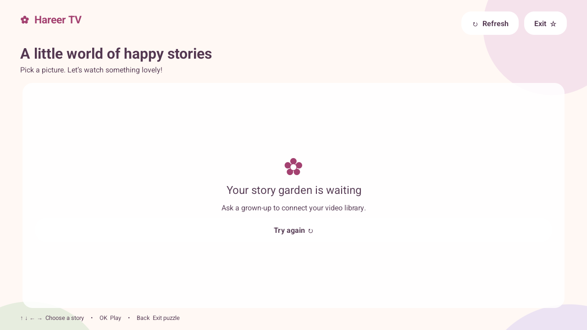
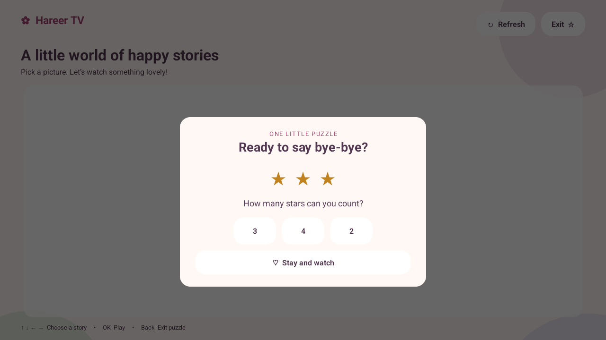

You choose the stories.
Your backend supplies a simple list of titles, pictures, and stored video links. Hareer TV turns them into big, easy-to-choose cards.
A calmer kind of TV time
Their favourite pictures. The stories you choose.
A lovely, simple place to watch—made for little hands and a TV remote.
Free & open source · Android 8.0+ · Your own video library

Actual app · Your pictures appear when your catalog is connected.
Less fuss. More favourite stories.
Your backend supplies a simple list of titles, pictures, and stored video links. Hareer TV turns them into big, easy-to-choose cards.
Move with the remote, press OK, and enjoy. Playback stays in Hareer TV, without a YouTube interface or added advertising SDK.
Count the stars before exiting through the app. It’s a gentle little activity, not a parent PIN. Blocking the Home button needs separate kiosk setup.

One last little adventure
A soft landing at the end of story time. A right answer closes the app. Or choose to stay for another story.
Read about the exit puzzle & kiosk mode ↗Make room for a little joy
Download Hareer TV, then follow the installation steps below.
This is an early release for Android TV and Google TV.
No videos are included. Your server’s catalog starts empty.
Version 1.0.0 · Android 8.0 or later
Download APK Verify download (SHA-256)Signed on the developer’s Mac.
Deployed from GitHub Releases.
From download to the big screen
For Android TV or Google TV devices that allow APK installation. Menu names vary by manufacturer. Samsung Tizen and LG webOS cannot run this Android APK.
Copy hareer-tv-1.0.0.apk to a USB drive, then connect it to your TV.
Use a TV file manager that can open APK files. If prompted, allow that file manager to “install unknown apps” in your TV’s settings.
Choose Install, then Open. You can turn off that file manager’s installation permission afterward.
No USB port? Use the computer method, or transfer the APK with a file-transfer tool already available on your TV.
Install Android SDK Platform Tools. Enable developer options and the supported USB or wireless debugging option on your TV. Accept its connection prompt.
In a terminal, in the folder containing the APK:
adb install -r hareer-tv-1.0.0.apkOpen it from your TV’s app launcher. Disable debugging when you’ve finished.
Good to know
The app reads https://tv.nawaa.app/videos.json. A grown-up needs to add titles, images, and video URLs to that backend. Videos are not bundled with the app. See the backend guide to configure your own library.
Yes, unless you separately configure Android lock-task (kiosk) mode on a supported device. The puzzle only controls the app’s exit flow. See the kiosk guide.
The TV plays stored files. A grown-up can add permitted YouTube links on the admin page; the backend downloads them one at a time and stores them before they appear on the TV.
Check that the device runs Android 8.0 or newer and permits sideloading. If you installed the earlier debug build, its signing key differs from this release: uninstall that test build first, then install this APK. Uninstalling removes local app data; a managed device may need administrator help.
Hareer TV has no account system, analytics, or advertising SDK. Your catalog, image, and video servers receive requests when the app is used. This page loads no third-party analytics or fonts; downloading uses GitHub.